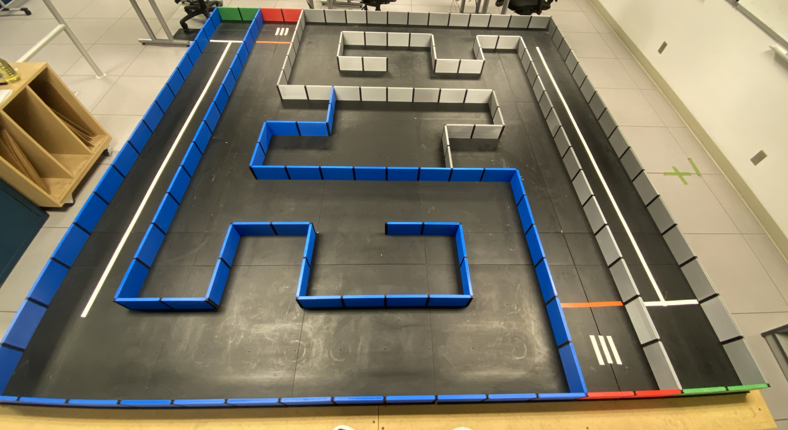

üöÄ Final Project#
Attention
Read this page thoroughly before you start working on this final project.
üìå Objectives#
Students should be able to integrate concepts from previous modules to develop a comprehensive system that effectively tackles complex tasks.
Students should be able to implement embedded systems, showcasing proficiency in creating systems dedicated to specific operations by embedding computers within machines.
Students should be able to apply and build upon the knowledge acquired in nearly all course modules to successfully complete the final project.
Note
First, solve the problem. Then, write the code.
üìú Agenda#
The final project serves as an integration of prior modules, culminating in the development of a comprehensive system designed to address a complex task. This project aligns with the concept of embedded systems, characterized by a computer embedded within a machine to perform a dedicated operation. Students will leverage and apply nearly all the modules covered throughout the course in the construction of this integrated system.
Challenge Levels:
Level 1: Maze exploration.
Level 2: Wall Following.
Important
If there are any discrepancies in the project description or grading specifications, the order of precedence is as follows: (1) Teams messages from instructors, (2) the Course Web, (3) Gradescope, and finally, (4) the project overview slides. Whenever there are any changes, the Course Web will be updated immediately with the new information, and any outdated descriptions will be crossed out
üéÆ Final Project Gamesmanship#
Demo and coding
Read the presentation and final report requirements before you start coding.
Start early to earn early-bird bonus points; delay may jeopardize timely completion.
Use the code from Lab 17 as a foundation, but avoid implementing your final project in the Lab 17 files. Instructors will review the code inside the
FinalProjectfolder.Employ LCD/UART extensively for debugging high-level behaviors.
Adjust tuning parameters like \(k_p\) during run-time using LCD, bump sensors, and switches. Note that during the 3-minute live demo, there will be no pauses for replacing batteries or reflashing the code - Don’t waste your time on these. Once the clock starts, it never stops.
Cease work for the final report
If your robot reaches only halfway to the Level 1 goal point, the deduction will be approximately 5-10 points.
Your analysis in the report is much more important than completing the maze.
Balance time spent on bonus points; don’t sacrifice report quality for bonus points. Don’t lose 30 points on the report to earn 15 bonus points.
Presentation
Utilize visual aids a lot! Figures, tables, and graphs are more helpful than words.
Ensure you discuss everything in the presentation section.
Adhere to the 6-minute time limit; practice for effective delivery. Your talk will be stopped at the 7-minute mark, and credit will not be given for parts not discussed. Adhering to the time limit for presentations is a basic etiquette. Even at professional conferences, talks can be cut short if they exceed the allotted time.
You are strongly recommended to practice your talk. Students who gave very short presentations to avoid exceeding the time limit often did not discuss enough details and lost even more points. So, practice! Even experienced engineers practice for their conference presentations.
Report
Throughly Read the template and do not miss anything in the template.
Use figures and tables to support your analysis and results.
While in-person demos are accepted, ensure submission of video demos aligned with the plots in your report.
üíª Procedure#
Timeline#
L34 0700: Design Presentation slides (Gradescope and Instructors)
Submit your
MS PowerPoint pptxfile to your instructor NLT L34 0700. Your slides will be played on your instructor’s PC for smooth transitions between speakers. Make sure to send a pptx file and not a Keynote file unless your instructor has approved it.Additionally, submit the PDF version of your presentation file on Gradescope no later than L34 0700.
No grace days can be used for the PowerPoint slides.
L34/35: Design Presentations
L39 0700: Level 1 Demo Due
Early turkey [5 Bonus Points]: Complete Level 1 by L37 (Tue 26 Nov) 2359.
No grace days can be used for early turkey demo.
Late Demos: You can use grace days, but all products must be submitted NLT T40 2359 (by the Dean’s policy).
L39 during your section: Level 2 live demo.
A live demo during L39 is mandatory.
Ensure your robot’s robustness for a live demo within 3 minutes.
In the event of a live demo failure, you may use a video demo submitted by L39 2359, but deductions of 5 points will be applied.
T40 2359: Final report & Code
No grace days can be used. All products must be submitted by midnight on T40.
Requirements for all levels#
We have been reinforcing these coding practices throughout the semester, but it is still valuable to remind you.
Avoid hard-coded numbers. Instead, utilize
#defineandconst. For example use BUMP1, BUMP2, … BUMP6 which are defined in Bump.h, rather than raw values like 0b00000001, 0b0000010, etc. Similiarly, replace:TimerA1_Init(&Controller, 500);
with:
// user TimerA1 to run the controller at 1000 Hz uint16_t const period_2us = 500; // T = 1ms TimerA1_Init(&Controller, period_2us); // f = 1000 Hz controller loop
Add comprehensive comments throughout your code. Emphasize the importance of thorough commenting.
Execute turns using tachometers for Level 1 without introducing delays or loops.
Strictly avoid delays, loops, waits, or sleeps in your Interrupt Service Routines (ISRs). Deductions of 5 points per level will apply if delays or loops exist within the ISR. For example:
void Controller(void){ // called every 1 ms Motor_TurnRight(3000, 3000); // for 180 deg turn Clock_Delay1ms(100); // AVOID } void Controller(void){ // called every 1 ms Motor_TurnRight(3000, 3000); // for 180 deg turn while(LeftSteps_deg < 180) { // AVOID Tachometer_GetSteps(&LeftSteps_deg, &RightSteps_deg); } }
Place all controller code within the ISR. A penalty of 5 points per level will be incurred if the controller code is found in the main function instead of an ISR. For example:
void main(void) : : while(1){ // Avoid time-critical operations inside this while loop. LCDOut(); // can be interrupted at any time // No state transition // No motor control or sensing // If you remove everything inside this while-loop, // your robot should still be able to complete the level. : }
Deductions#
Deductions of 5 points per level will apply if delays or loops exist within the ISR.
A penalty of 5 points per level will be incurred if the controller code is found in the main function instead of an ISR.
A penalty of 5 points per level will be incurred for poor coding practices, such as inadequate comments or the use of hard-coded numbers instead of variables or enumerated types.
üé¨ Demonstrations#
Level 1: Maze Exploration#
Use the tachometers and bump sensors to navigate the maze and return home. Imagine you are in uncharted territory with a compass and a GPS receiver, tasked with reaching a designated coordinate.
Requirements:
Implement your code in the
Level1.cfile within theFinalProjectproject. Avoid implementing your final project in the Lab 17 files. Instructors will review the code inside theFinalProjectfolder.Utilize the tachometers and bump switches for maze navigation; however, the use of IR distance sensors is strictly prohibited.
The designated
Homeis identified by the three white lines, and thehome areais marked by the orange line.If both wheels are touching or inside the orange line, the robot is considered to be in the home area.
When the robot reaches the designated
home area, it should come to a complete stop before making any contact with the wall.Upon successfully reaching home, your robot is expected to exhibit alternating flashes of red and blue LEDs, with each color lasting 0.5 seconds. No delays or loops are allowed.
Your robot is free to navigate the maze at any speed.
Your robot begins the exploration without prior knowledge of the maze, except for knowing the Home and starting coordinates, as well as the initial heading of North.
The coordinates of
Homeare identified at the origin (0,0), with the starting position fixed at (360, 0) in millimeters. Your robot is aware of both Home and starting position coordinates. You have the flexibility to modify these coordinates as needed.
While the blue maze is slightly easier, you may use either maze for Level 2. (Updated on 22 Nov)
Include a plot illustrating the x- and y-coordinates of your robot’s movement over time in the final report. It is a common and effective way to visually represent the movement or trajectory of a robot. This can provide valuable insights into the robot’s behavior and performance. Additionally, submit a video demo corresponding to this plot.This combination of a visual representation and a practical demonstration will provide a comprehensive overview of the robot’s behavior and performance, enhancing the clarity and impact of your findings. Ensure that the plot is appropriately labeled with all necessary information for interpretation.
Partial Credit Points
Deduction of 2 points if the robot reaches home but does not come to a complete stop.
Deduction of 3 points if the robot makes a 90-degree turn toward the home area at the T-joint but reaches only any point between the T-joint and Home.
Deduction of 5 points if the robot reaches any point between the third turn and the T-joint.
[5 Bonus Points] Upon successfully reaching home, your robot now knows its way back to the starting position. Make your robot autonomously turn around and return to the starting position. While your robot may touch the side walls during its return, it is not permitted to use bump sensors to make 90-degree turns. (Updated on 21 Nov)

Below is the plot corresponding to this demo video.
All the runs in the following video qualify for a full credit demo.
{kind=link}
{kind=link}
{kind=link}
Level 2: Wall Following#
Explore the maze using the distance sensors.
Requirements:
Implement your code in
Level2. Avoid implementing your final project in the Lab 17 files.Your robot must effectively explore the maze using distance sensors.
Ensure that your robot reaches the goal and halts before colliding with the wall.
Your robot should display alternating flashes of red and blue LEDs, with each color lasting 0.5 seconds.
Your robot can operate at any speed.
No bump switches are allowed to use.
You should use
Classifierto determine road intersections.Assume your robot has prior knowledge of the maze layout.
[5 Bonus Points] Arrive at the goal within 11.0 seconds.
A live demo during L39 is mandatory. Ensure your robot is robustness enough for a live demo within 3 minutes (2 minutes for the first round and 1 minute for the second round). Note that during the 3-minute live demo, there will be no pauses for replacing batteries or reflashing the code - Don’t waste your time on these. Once the clock starts, it never stops.
In the event of a live demo failure, you may use a video demo submitted before your section on L39, but deductions of 5 points will be applied.
The official maze for Level 2 is the gray maze and the live demo must be performed in it. (Updated on 22 Nov)
üë©‚Äçüè´ Design Presentation (50 Points)#
Provide a 6-minute presentation followed by approximately 2 minutes for Q&A, covering the following topics:
Note
Make extensive use of visual aids, such as a maze picture, flowcharts, and diagrams. Avoid filling slides with excessive text; instead, keep your audience engaged and focused on listening to you.
[5 Points] Purpose:
Briefly describe the problem.
Discuss the project requirements.
[25 Points] Design:
This section accounts for 50% of the presentation grade.
Discuss the details of your design. For example,
How to make turn decisions at intersections.
How to keep track of the robot’s coordinates.
How to handle misclassifications.
Specify the timers you plan to use, their intended purposes, and operating frequencies.
Include a clearly legible finite state machine.
Outline the data you intend to collect for experimental analysis and explain your data collection method.
[15 Points] Debugging and testing:
Provide detailed information on debugging and testing methods. Explain how your methods enhance debugging and testing efficiency.
Describe high-level debugging strategies for unexpected robot behavior in the maze, including identification and resolution of issues like misclassification or getting trapped at a corner.
Exclude discussions related to compile-time debugging, such as syntax errors and register configurations.
[5 Points] Questions:
Prepare to answer questions about your design choices.
Be ready to address inquiries regarding implementation of additional functionality in your project.
Note that the question component extends beyond the 6-minute presentation by an additional 2 minutes.
Timing:
Points will be deducted for exceeding the 6-minute limit.
The presentation will be halted at the 7-minute mark, and credit will not be given for parts not discussed. Therefore, practice!
Emphasize the importance of professional timing in a presentation, considering its impact on the audience and subsequent speakers.
Submission:
Submit your
MS PowerPoint pptxfile to your instructor NLT L34 0700. Your slides will be played on your instructor’s PC for smooth transitions between speakers. Make sure to send a pptx file and not a Keynote file unless your instructor has approved it.Additionally, export your PowerPoint file to a pdf file and submit it on Gradescope by L34 0700. Be sure to select questions and pages to indicate where your responses are located. Failure to do so will result in point deductions. Refer to the instruction gif inside the Final Report section for guidance.
No grace days can be used for the PowerPoint slides.
Attention
Submit your MS PowerPoint pptx file to your instructor. Additionally, export your PowerPoint file to a pdf file and submit it on Gradescope. Select questions and pages to indicate the locations of your response.
üìà Final Report (100 Points)#
Refer to the example report, ECE382_Project Report Template.docx, available in Teams under Files > Class Materials, for detailed guidance on report content.
Note
Even if your demos are not successful, whether you use grace days or not, ensure you discuss all the levels based on the progress you have made.
[10 Points] Introduction/Purpose:
Describe the problem.
Discuss the requirements.
Outline any assumptions made at the project’s outset.
[20 Points] Design:
Discuss design choices for each level, including values for PWM_AVERAGE, \(k_p\), and \(k_i\).
Specify the timers used, their purposes, and the operating frequencies.
Explain the data collected for experiment analysis and detail your data collection method.
[20 Points] Debugging and testing:
Provide comprehensive details on debugging and testing methods.
Explain how your methods enhance debugging and testing efficiency.
Describe how you identified and resolved unexpected robot behaviors.
Exclude discussions related to compile-time debugging, such as syntax errors.
[50 Points] Analysis and Results:
This is the most essential part of the final project. You are expected to provide high-quality engineering analysis.
Your analysis should be based on collected data, utilizing figures and tables. For example, evaluate the robot’s performance in Level 2 by employing step responses. Base your analysis on data and avoid relying on visual observations.
Discuss results for each level, including measurements and plots.
Evaluate the time taken for your robot to complete tasks.
If unresolved issues exist, discuss potential solutions with more time.
Highlight any unique features that make your robot stand out.
Which levels were you unable to complete, and what were the reasons for the inability?
Discuss ongoing issues and problems and how you addressed them.
Did you do anything unique to make your robot better than others?
[10 Points] Conclusion
Conclude your work
Concisely summarize the results.
Emphasize the overall result of the project.
Attention
Submit your report on Gradescope. Be sure to select questions and pages to indicate where your responses are located. Failure to do so will result in point deductions.
{kind=link}
üöö Deliverables#
Note
Unlike other assignments, any points earned above the total project points (250) can be applied to your final course grade.
Deliverable 1: [50 Points] Design Presentation#
[5 Points] Purpose
[25 Points] Design
[15 Points] Debugging and testing
[5 Points] Questions
Deliverable 2: [100 points + \(\alpha\)] Demo and Code#
[15 Bonus Points]:
[5 Points] Early turkey
[10 Points] 5 points for each level
[5-15 points] Final Race
Deductions:
[-10 Points]: 5 points per level deducted for delays or loops in ISR.
[-10 Points]: 5 points per level deducted for controller code in main instead of ISR.
[-10 Points]: Up to 5 points per level deducted for bad coding practices (e.g., poor comments, hard-coded numbers).
Uncompilable code results in a grade of 0 for the level.
üèá Final Race
L39 during your section. We will measure completion time for the Level 2 demo.
Same requirements as Level 2 apply: reach the goal and stop before hitting the wall.
You will have two rounds: 2 minutes for the first round and 1 minute for the second round.
A run is considered valid as long as it starts within the given timeframe.
Code changes are allowed within the 3-minute timeframe. While you can reflash your program multiple times within the 3 minutes, it is highly recommended to use LCD and switches for adjustments.
If you are next in line, you need to stand by on the deck. There won’t be any wait time once the previous turn is complete.
Prizes:
1st place: 15 bonus points and name on the lab plaque.
2nd place: 12 bonus points
3rd and 4th places: 10 bonus points
1st place in each section if not in the 1st - 4th places in class: 5 bonus points
Deliverable 3: [100 Points + \(\alpha\)] Report#
[10 Points] Introduction
[20 Points] Design
[20 Points] Debugging and testing
[40 Points] Analysis and Results
[10 Points] Conclusion
[IP Points] Extra points for the best paper in class!
Deliverable 4: [0 Points] Return your robot#
Return your robot in person to the instructors or Mr. Hall by Wed 11 Dec 1500.
Ensure there are no loose parts, and tighten all screws before returning your robot.
[-20 Points] Up to 20 points may be deducted for loose parts or not returning the robot in person on time.